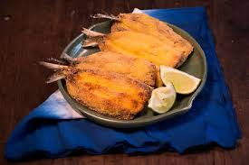
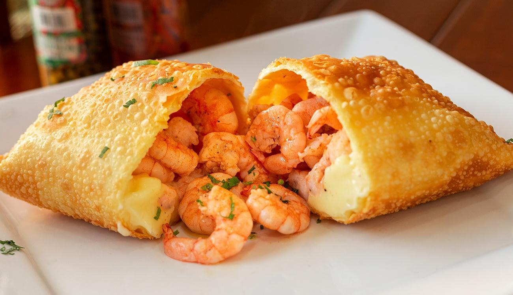
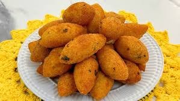
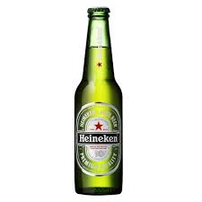

Cardápio de SEXTA 21/02
-

Sardinha Frita à Moda do BarUma verdadeira explosão de sabor direto do mar! Sardinhas fresquinhas, douradas e crocantes, temperadas com um toque especial da casa, servidas com fatias de limão para realçar o sabor. Perfeitas para quem ama o frescor do mar em cada mordida.
-

Pastel de CamarãoMassa crocante recheada com camarões frescos temperados e refogados, proporcionando uma explosão de sabor a cada mordida. Uma opção irresistível para os amantes de frutos do mar.
-

Bolinho de Aipim RecheadoSabor e tradição em cada mordida! Bolinhos crocantes por fora e macios por dentro, feitos com aipim fresquinho e recheados com carne seca desfiada, um toque de queijo e temperos especiais. Perfeitos para acompanhar uma boa cerveja ou caipirinha!
-

HeineikenA Heineken é uma cerveja lager puro malte, de cor amarelo-dourado, produzida com ingredientes 100% naturais: água, malte de cevada e lúpulo. Apresenta um sabor fresco e equilibrado, com notas frutadas e um amargor suave. Ideal para acompanhar hambúrgueres, pratos mexicanos, queijos e castanhas. Teor alcoólico de 5,0%.